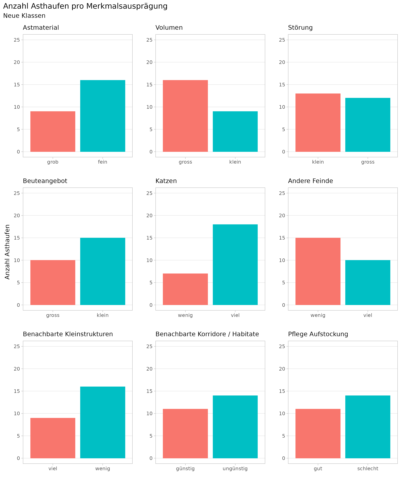
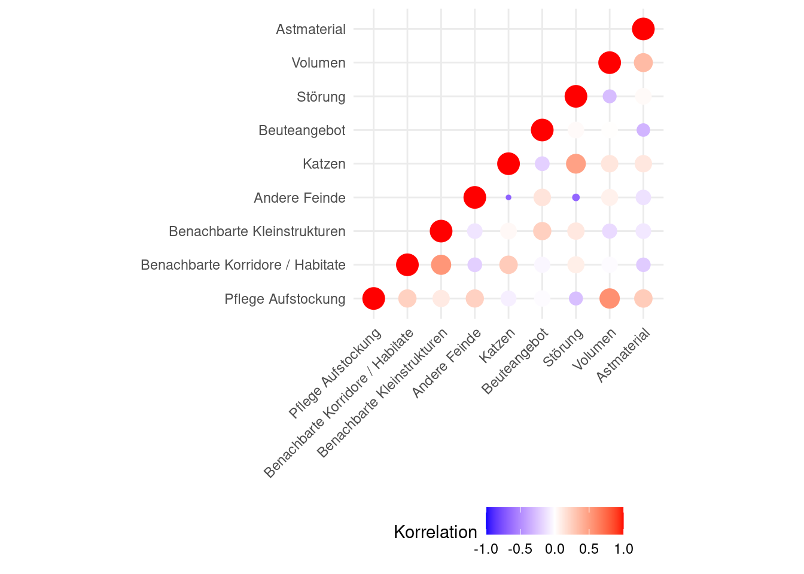
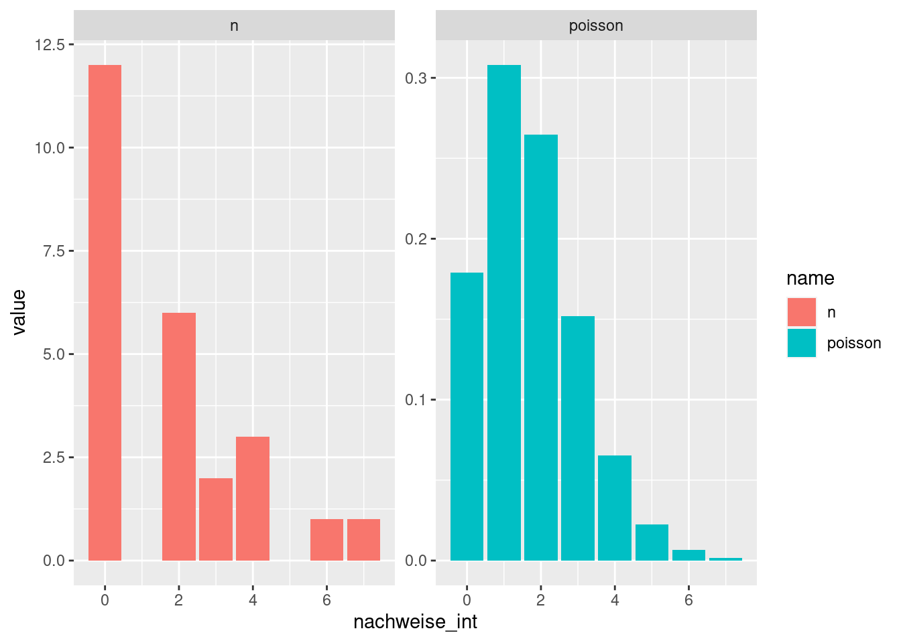

7 Anhang
7.1 Anhang A: Nachweiserfolge anderer Studien
| Region | Jahr | npos | ntot | Quelle |
|---|---|---|---|---|
| Sonstige Studie | ||||
| Glâne-Gruyère | 2009 | 5 | 100 | Capt & Marchesi, 2010 |
| Bas-Valais | 2012 | 4 | 100 | Capt & Marchesi, 2012 |
| Glâne-Gruyère | 2012 | 25 | 100 | Capt & Marchesi, 2012 |
| Jura Central | 2012 | 21 | 100 | Capt & Marchesi, 2012 |
| Klingnau | 2012 | 2 | 100 | Capt & Marchesi, 2012 |
| Linthebene | 2012 | 8 | 100 | Capt & Marchesi, 2012 |
| Rottal | 2012 | 13 | 100 | Capt & Marchesi, 2012 |
| Unterengadin | 2012 | 2 | 80 | Capt & Marchesi, 2012 |
| Riviera-Magadino | 2012 | 0 | 100 | Capt & Marchesi, 2012 |
| Linthebene | 2013 | 34 | 131 | Engler, 2010 |
| Horgen | 2014 - 2019 | 25 | 32 | Ratnaweera, 2020b |
| Wädenswil | 2015 | 7 | 48 | Laas, 2017 |
| Wauwiler Moos | 2018 | 7 | 32 | Dürst & Vogler, 2019 |
| Neuchâtel | 2019 | 13 | 20 | Blant, 2019 |
| Jura | 2019 | 9 | 20 | Blant, 2019 |
| Erfolgskontrolle | ||||
| Entlebuch | 2018 | 6 | 30 | Steffen, 2018 |
| Tafeljura | 2018 | 4 | 20 | Boschi, 2020 |
| Irchel | 2018 | 0 | 10 | Ringger, 2020 |
| Horgen | 2019 | 18 | 39 | Ratnaweera, 2020b |
| Tafeljura | 2019 | 5 | 20 | Boschi, 2020 |
| Irchel | 2019 | 0 | 20 | Ringger, 2020 |
| Martigny | 2020 | 14 | 36 | Ratnaweera, 2020 |
| Horgen | 2020 | 14 | 39 | Ratnaweera, 2020b |
| Irchel | 2020 | 1 | 6 | Ringger, 2020 |
7.2 Anhang B: Erhebung 1 (Rohdaten)
| Woche | Tierart | von | bis |
|---|---|---|---|
| Phase: Herbst ’19 | |||
| Str23 | |||
| 1 | Hermelin | 2019-08-26 | 2019-09-05 |
| 1 | Siebenschläfer | 2019-08-26 | 2019-09-05 |
| 4 | Hermelin | 2019-09-25 | 2019-10-07 |
| Str24 | |||
| 2 | Frosch | 2019-09-05 | 2019-09-17 |
| Str54 | |||
| 1 | Hauskatze | 2019-08-26 | 2019-09-05 |
| 2 | Hauskatze | 2019-09-05 | 2019-09-17 |
| Str133 | |||
| 1 | Hermelin | 2019-08-26 | 2019-09-05 |
| 2 | Hermelin | 2019-09-05 | 2019-09-17 |
| 3 | Hermelin | 2019-09-17 | 2019-09-25 |
| 4 | Hermelin | 2019-09-25 | 2019-10-07 |
| Str147 | |||
| 1 | Hauskatze | 2019-08-26 | 2019-09-05 |
| 3 | Hauskatze | 2019-09-17 | 2019-09-25 |
| Str168 | |||
| 1 | Hermelin | 2019-08-26 | 2019-09-05 |
| 4 | Hauskatze | 2019-09-25 | 2019-10-07 |
| Str183 | |||
| 1 | Hermelin | 2019-08-26 | 2019-09-05 |
| Str210 | |||
| 2 | Hermelin | 2019-09-05 | 2019-09-17 |
| Str220 | |||
| 2 | Hermelin | 2019-09-05 | 2019-09-17 |
| Str223 | |||
| 1 | Hermelin | 2019-08-26 | 2019-09-05 |
| 4 | Hermelin | 2019-09-25 | 2019-10-07 |
| Str231 | |||
| 2 | Hermelin | 2019-09-05 | 2019-09-17 |
| Str242 | |||
| 1 | Hauskatze | 2019-08-26 | 2019-09-05 |
| Str265 | |||
| 1 | Siebenschläfer | 2019-08-26 | 2019-09-05 |
| 2 | Siebenschläfer | 2019-09-05 | 2019-09-17 |
| 4 | Hermelin | 2019-09-25 | 2019-10-07 |
| Str273 | |||
| 1 | Siebenschläfer | 2019-08-26 | 2019-09-05 |
| 2 | Siebenschläfer | 2019-09-05 | 2019-09-17 |
| 2 | Hauskatze | 2019-09-05 | 2019-09-17 |
| 2 | Eichhörnchen | 2019-09-05 | 2019-09-17 |
| 3 | Siebenschläfer | 2019-09-17 | 2019-09-25 |
| Str310 | |||
| 1 | Hermelin | 2019-08-26 | 2019-09-05 |
| Str312 | |||
| 1 | Hermelin | 2019-08-26 | 2019-09-05 |
| 2 | Hermelin | 2019-09-05 | 2019-09-17 |
| 3 | Hermelin | 2019-09-17 | 2019-09-25 |
| 4 | Hermelin | 2019-09-25 | 2019-10-07 |
| Str323 | |||
| 1 | Iltis | 2019-08-26 | 2019-09-05 |
| 2 | Hauskatze | 2019-09-05 | 2019-09-17 |
| Str325 | |||
| 2 | Hermelin | 2019-09-05 | 2019-09-17 |
| 3 | Hermelin | 2019-09-17 | 2019-09-25 |
| 4 | Iltis | 2019-09-25 | 2019-10-07 |
| Str329 | |||
| 2 | Hermelin | 2019-09-05 | 2019-09-17 |
| 3 | Hermelin | 2019-09-17 | 2019-09-25 |
| Str12745 | |||
| 4 | Hermelin | 2019-09-25 | 2019-10-07 |
| Str15554 | |||
| 1 | Vogel | 2019-08-26 | 2019-09-05 |
| Str15564 | |||
| 1 | Hermelin | 2019-08-26 | 2019-09-05 |
| 2 | Hermelin | 2019-09-05 | 2019-09-17 |
| 3 | Hermelin | 2019-09-17 | 2019-09-25 |
| Str15944 | |||
| 1 | Hermelin | 2019-08-26 | 2019-09-05 |
| 2 | Hermelin | 2019-09-05 | 2019-09-17 |
| 2 | Hauskatze | 2019-09-05 | 2019-09-17 |
| 4 | Hermelin | 2019-09-25 | 2019-10-07 |
| Str17148 | |||
| 2 | Hermelin | 2019-09-05 | 2019-09-17 |
| Str17544 | |||
| 1 | Hermelin | 2019-08-26 | 2019-09-05 |
| Str17548 | |||
| 3 | Vogel | 2019-09-17 | 2019-09-25 |
| Phase: Frühling ’20 | |||
| Str24 | |||
| 1 | Hermelin | 2020-03-31 | 2020-04-10 |
| 5 | Hermelin | 2020-05-01 | 2020-05-09 |
| Str126 | |||
| 5 | Hermelin | 2020-05-01 | 2020-05-09 |
| Str223 | |||
| 3 | Hermelin | 2020-04-17 | 2020-04-24 |
| Str231 | |||
| 2 | Hauskatze | 2020-04-10 | 2020-04-17 |
| Str273 | |||
| 1 | Eichhörnchen | 2020-03-31 | 2020-04-10 |
| 5 | Hermelin | 2020-05-01 | 2020-05-09 |
| Str304 | |||
| 1 | Hermelin | 2020-03-31 | 2020-04-10 |
| 2 | Hermelin | 2020-04-10 | 2020-04-17 |
| Str312 | |||
| 5 | Hermelin | 2020-05-01 | 2020-05-09 |
| 5 | unbekannt | 2020-05-01 | 2020-05-09 |
| 6 | Hermelin | 2020-05-08 | 2020-05-20 |
| Str320 | |||
| 1 | Hermelin | 2020-03-31 | 2020-04-10 |
| Str323 | |||
| 6 | Hauskatze | 2020-05-08 | 2020-05-20 |
| Str325 | |||
| 6 | Hermelin | 2020-05-08 | 2020-05-20 |
| Str15546 | |||
| 5 | Hermelin | 2020-05-01 | 2020-05-09 |
| 6 | Hermelin | 2020-05-08 | 2020-05-20 |
| Str15564 | |||
| 5 | Hermelin | 2020-05-01 | 2020-05-09 |
| Str15944 | |||
| 2 | Hermelin | 2020-04-10 | 2020-04-17 |
| 3 | Hermelin | 2020-04-17 | 2020-04-24 |
| 4 | Hermelin | 2020-04-24 | 2020-05-01 |
| 5 | Hermelin | 2020-05-01 | 2020-05-09 |
| Str17148 | |||
| 1 | Hermelin | 2020-03-31 | 2020-04-10 |
| Str17546 | |||
| 2 | Hermelin | 2020-04-10 | 2020-04-17 |
| Str17548 | |||
| 1 | Hermelin | 2020-03-31 | 2020-04-10 |
| 5 | Hermelin | 2020-05-01 | 2020-05-09 |
| 6 | Hermelin | 2020-05-08 | 2020-05-20 |
7.3 Anhang C: Datensatz A (Rohdaten)
| KW | Tierart |
|---|---|
| Jahr: 2014 | |
| Struktur: StB1 | |
| 10 | Mäuse |
| 10 | Igel |
| 14 | Mäuse |
| 14 | Hauskatze |
| 19 | Mäuse |
| 24 | Mäuse |
| 31 | Mäuse |
| Struktur: StB2 | |
| 14 | Mäuse |
| 14 | Hermelin |
| 19 | Mäuse |
| 24 | Mäuse |
| 24 | Hermelin |
| 31 | Mäuse |
| Struktur: StB3 | |
| 10 | Mäuse |
| 14 | Mäuse |
| 14 | Iltis |
| 14 | Hermelin |
| 19 | Mäuse |
| 24 | Mäuse |
| Jahr: 2015 | |
| Struktur: StB4 | |
| 11 | Mäuse |
| 13 | Mäuse |
| 13 | Iltis |
| 16 | Mäuse |
| 16 | Iltis |
| 17 | Mäuse |
| 17 | Iltis |
| 18 | Iltis |
| 21 | Mäuse |
| Struktur: StB5 | |
| 13 | Mäuse |
| 13 | Iltis |
| 16 | Mäuse |
| 16 | Hermelin |
| 17 | Mäuse |
| 17 | Iltis |
| 18 | Mäuse |
| 18 | Iltis |
| 21 | Mäuse |
| 21 | Iltis |
| 21 | Steinmarder |
| Struktur: StB6 | |
| 11 | Mäuse |
| 11 | Iltis |
| 11 | Hermelin |
| 11 | Hauskatze |
| 13 | Mäuse |
| 13 | Iltis |
| 16 | Mäuse |
| 16 | Iltis |
| 17 | Mäuse |
| 17 | Iltis |
| 21 | Mäuse |
| 21 | Iltis |
| 23 | Mäuse |
| 23 | Iltis |
| Jahr: 2016 | |
| Struktur: Ab1 | |
| 8 | Hermelin |
| Struktur: Dw1 | |
| 25 | Mäuse |
| 25 | Iltis |
| Struktur: Gh1 | |
| 15 | Mäuse |
| 18 | Mäuse |
| 18 | Hauskatze |
| 20 | Mäuse |
| 23 | Mäuse |
| 25 | Mäuse |
| 32 | Mäuse |
| 32 | Steinmarder |
| 35 | Mäuse |
| 35 | Steinmarder |
| 39 | Mäuse |
| 41 | Mäuse |
| 41 | Hermelin |
| Struktur: Gh2 | |
| 18 | Mäuse |
| 20 | Mäuse |
| 23 | Mäuse |
| 25 | Mäuse |
| 32 | Mäuse |
| 35 | Mäuse |
| 41 | Mäuse |
| 41 | Hermelin |
| 45 | Hermelin |
| Struktur: Gs | |
| 32 | Mäuse |
| 32 | Iltis |
| 35 | Mäuse |
| 39 | Mäuse |
| 39 | Iltis |
| 39 | Hermelin |
| 41 | Mäuse |
| Struktur: Gw | |
| 16 | Mäuse |
| 23 | Mäuse |
| 29 | Mäuse |
| 32 | Siebenschläfer |
| 37 | Mäuse |
| 37 | Siebenschläfer |
| Struktur: LaW1 | |
| 17 | Mäuse |
| 17 | Hermelin |
| Struktur: LaW2 | |
| 15 | Mäuse |
| 15 | Iltis |
| 15 | Hermelin |
| 16 | Mäuse |
| 16 | Iltis |
| 16 | Hermelin |
| Struktur: Lh | |
| 6 | Mäuse |
| 6 | Iltis |
| 6 | Hauskatze |
| Struktur: Re1 | |
| 14 | Mäuse |
| 15 | Mäuse |
| Struktur: Re2 | |
| 14 | Mäuse |
| Struktur: Si | |
| 23 | Mäuse |
| 29 | Mäuse |
| 31 | Mäuse |
| 35 | Mäuse |
| 37 | Siebenschläfer |
| Struktur: Wb1 | |
| 14 | Mäuse |
| 18 | Mäuse |
| 20 | Mäuse |
| 23 | Mäuse |
| 23 | Hermelin |
| Struktur: Wb2 | |
| 14 | Mäuse |
| 18 | Mäuse |
| 20 | Mäuse |
| 23 | Mäuse |
| 23 | Hermelin |
| Jahr: 2017 | |
| Struktur: Mo1 | |
| 17 | Igel |
| 24 | Mäuse |
| 24 | Igel |
| 33 | Mäuse |
| 33 | Hermelin |
| 37 | Mäuse |
| 37 | Igel |
| 41 | Mäuse |
| 41 | Hermelin |
| Struktur: Mo3 | |
| 17 | Mäuse |
| 24 | Hermelin |
| 41 | Mäuse |
| 41 | Hermelin |
| Struktur: Oe1 | |
| 50 | Mäuse |
| 52 | Mäuse |
| 52 | Vogel |
| Struktur: Oe2 | |
| 46 | Mäuse |
| 46 | Vogel |
| Struktur: Os1 | |
| 26 | Iltis |
| 26 | Steinmarder |
| Struktur: Uh1 | |
| 26 | Mäuse |
| 26 | Hermelin |
| Jahr: 2018 | |
| Struktur: Aa1 | |
| 23 | Mäuse |
| 23 | Iltis |
| 23 | Hermelin |
| 35 | Mäuse |
| 35 | Steinmarder |
| 35 | Frosch |
| Struktur: Aa2 | |
| 8 | Mäuse |
| 18 | Mäuse |
| 18 | Hermelin |
| 23 | Mäuse |
| 23 | Frosch |
| 33 | Mäuse |
| 33 | Hermelin |
| Struktur: Kw1 | |
| 47 | Mäuse |
| 47 | Vogel |
| 49 | Mäuse |
| 49 | Hermelin |
| 49 | Vogel |
| 51 | Mäuse |
| 51 | Hermelin |
| Struktur: Kw2 | |
| 47 | Mäuse |
| 47 | Vogel |
| 49 | Mäuse |
| 49 | Hermelin |
| 49 | Steinmarder |
| 49 | Vogel |
| 51 | Mäuse |
| Struktur: Oe1 | |
| 5 | Mäuse |
| 9 | Mäuse |
| Struktur: Oe2 | |
| 5 | Mäuse |
| 5 | Vogel |
| 18 | Mäuse |
| 18 | Igel |
| Struktur: Of1 | |
| 13 | Mäuse |
| 13 | Hermelin |
| 13 | Steinmarder |
| 15 | Mäuse |
| 17 | Mäuse |
| 17 | Steinmarder |
| 21 | Mäuse |
| 23 | Mäuse |
| 23 | Hermelin |
| 23 | Steinmarder |
| 25 | Mäuse |
| 25 | Hermelin |
| 26 | Mäuse |
| 26 | Hermelin |
| 26 | Hauskatze |
| 28 | Mäuse |
| 28 | Hermelin |
| 28 | Steinmarder |
| 28 | Hauskatze |
| 29 | Mäuse |
| 33 | Mäuse |
| 36 | Mäuse |
| 36 | Hermelin |
| 38 | Mäuse |
| 42 | Mäuse |
| 45 | Mäuse |
| Struktur: Of2 | |
| 13 | Mäuse |
| 13 | Hermelin |
| 15 | Mäuse |
| 17 | Mäuse |
| 17 | Hermelin |
| 20 | Mäuse |
| 20 | Hermelin |
| 23 | Mäuse |
| 23 | Hermelin |
| 25 | Hermelin |
| 28 | Hermelin |
| 30 | Hermelin |
| 30 | Hauskatze |
| 33 | Mäuse |
| 36 | Mäuse |
| 36 | Hermelin |
| 38 | Mäuse |
| 39 | Mäuse |
| 42 | Mäuse |
| 45 | Mäuse |
| 45 | Steinmarder |
| Jahr: 2019 | |
| Struktur: Kw1 | |
| 2 | Mäuse |
| 2 | Vogel |
| 4 | Mäuse |
| 8 | Mäuse |
| 8 | Steinmarder |
| 11 | Mäuse |
| 11 | Hermelin |
| 13 | Mäuse |
| 13 | Hermelin |
| 17 | Mäuse |
| 21 | Mäuse |
| 24 | Mäuse |
| 24 | Hermelin |
| 29 | Mäuse |
| 29 | Hermelin |
| 33 | Mäuse |
| 33 | Hermelin |
| Struktur: Kw2 | |
| 2 | Mäuse |
| 2 | Vogel |
| 4 | Mäuse |
| 8 | Mäuse |
| 8 | Vogel |
| 11 | Hermelin |
| 11 | Vogel |
| 13 | Mäuse |
| 13 | Hermelin |
| 17 | Mäuse |
| 17 | Hauskatze |
| 17 | Vogel |
| 21 | Mäuse |
| 21 | Hermelin |
| 21 | Igel |
| 24 | Mäuse |
| 24 | Hermelin |
| 24 | Frosch |
| 29 | Mäuse |
| 29 | Hermelin |
| 33 | Mäuse |
| 33 | Hermelin |
7.4 Anhang D: Nachweise pro Struktur (Erhebung 1)
7.5 Anhang E: Geodaten für Erhebung 1 & 2
Ein Geopackage mit allen untersuchten Standorten (Erhebung 1 & 2) kann hier heruntergeladen werden: spurentunnel_fotofallen_standorte.gpkg
7.6 Anhang F: Asthaufenqualität
| ort | ah_id | alter_datum_erstellung | astmaterial | volumen | storung | beute_angebot | katzen | andere_feinde | benachbarte_kleinstr | benachbarte_korridore_habitate | pflege_aufstockung | total_nach_weise_wk_2019_2020 | hermelin | iltis | mauswiesel |
|---|---|---|---|---|---|---|---|---|---|---|---|---|---|---|---|
| Böschen Sägenbach | 235 | 2017-03-11 | 1 | 2 | 3 | 3 | 2 | 1 | 1 | 3 | 0 | 0 | 0 | 0 | 0 |
| Bühl Wanderweg | 232 | 2017-03-18 | 2 | 2 | 0 | 3 | 1 | 2 | 2 | 1 | 1 | 0 | 0 | 0 | 0 |
| Grüental-Reidholz | 313 | 2018-03-10 | 1 | 2 | 2 | 3 | 1 | 2 | 4 | 2 | 3 | 0 | 0 | 0 | 0 |
| Hecke Rietwies | 147 | 2016-02-05 | 1 | 1 | 3 | 3 | 3 | 1 | 4 | 4 | 0 | 0 | 0 | 0 | 0 |
| Höhn Waggital-Widen | 122 | 2016-04-14 | 4 | 4 | 3 | 2 | 3 | 1 | 2 | 3 | 3 | 0 | 0 | 0 | 0 |
| Langacherbach Horgen | 54 | 2016-03-11 | 1 | 0 | 1 | 3 | 0 | 2 | 3 | 2 | 0 | 0 | 0 | 0 | 0 |
| Längimoos Landschaft | 18346 | 2018-12-01 | 2 | 1 | 4 | 2 | 3 | 1 | 4 | 4 | 3 | 0 | 0 | 0 | 0 |
| Maiacher | 242 | 2017-05-09 | 2 | 2 | 2 | 3 | 0 | 3 | 2 | 1 | 3 | 0 | 0 | 0 | 0 |
| Rinderweid Waldrand | 17150 | 2018-12-01 | 3 | 3 | 1 | 2 | 2 | 1 | 3 | 3 | 2 | 0 | 0 | 0 | 0 |
| Stockengut Hochweid | 15549 | 2019-02-01 | 3 | 4 | 1 | 3 | 1 | 2 | 4 | 4 | 4 | 0 | 0 | 0 | 0 |
| Stockengut Hochweid | 15554 | 2019-02-01 | 3 | 2 | 1 | 3 | 2 | 2 | 4 | 4 | 4 | 0 | 0 | 0 | 0 |
| Weide ob Hüttnerseeli | 18 | 2016-03-15 | 2 | 2 | 4 | 4 | 2 | 1 | 3 | 3 | 4 | 0 | 0 | 0 | 0 |
| Bachmann Widen | 304 | 2018-03-17 | 4 | 4 | 2 | 2 | 2 | 1 | 2 | 1 | 4 | 2 | 2 | 0 | 0 |
| Gwandlen DoppelAh | 23 | 2016-04-10 | 3 | 4 | 2 | 2 | 2 | 1 | 3 | 3 | 4 | 2 | 2 | 0 | 0 |
| Gwandlen Stein-Stamm klein | 24 | 2016-04-10 | 3 | 1 | 2 | 4 | 2 | 1 | 3 | 3 | 3 | 2 | 2 | 0 | 0 |
| Längimoos bei Hof | 17148 | 2018-12-01 | 3 | 2 | 3 | 3 | 2 | 1 | 4 | 3 | 3 | 2 | 2 | 0 | 0 |
| Sagenholz | 329 | 2016-08-18 | 2 | 1 | 3 | 1 | 3 | 0 | 3 | 4 | 1 | 2 | 2 | 0 | 0 |
| Stockengut Hochweid | 15546 | 2019-02-01 | 3 | 4 | 1 | 3 | 2 | 2 | 4 | 4 | 4 | 2 | 2 | 0 | 0 |
| Mosli Mitte | 223 | 2017-04-06 | 3 | 1 | 3 | 3 | 2 | 1 | 4 | 2 | 1 | 3 | 3 | 0 | 0 |
| Sihlhalden | 17548 | 2019-01-20 | 4 | 1 | 3 | 2 | 1 | 2 | 2 | 2 | 1 | 3 | 3 | 0 | 0 |
| Autobahn Hottinger | 133 | 2016-11-01 | 3 | 3 | 1 | 2 | 3 | 2 | 1 | 1 | 3 | 4 | 4 | 0 | 0 |
| Kräh oberhalb Strasse | 325 | 2016-02-01 | 3 | 4 | 3 | 4 | 3 | 1 | 2 | 1 | 2 | 4 | 3 | 1 | 0 |
| Stockengut Chilenmoos | 15564 | 2019-02-01 | 3 | 2 | 1 | 2 | 1 | 2 | 2 | 3 | 4 | 4 | 4 | 0 | 0 |
| Kräh Röhrli West | 312 | 2018-04-14 | 4 | 0 | 3 | 2 | 2 | 1 | 3 | 1 | 1 | 6 | 6 | 0 | 0 |
| Mosli Nordeck | 15944 | 2018-08-20 | 4 | 3 | 3 | 3 | 2 | 1 | 4 | 2 | 1 | 7 | 7 | 0 | 0 |

7.7 Anhang G: Statistische Modellierung attraktivitätsfördernder Faktoren
7.7.1 Korrelationsmatrix der Faktoren
- Störung, Katzen und andere Feinde sind stark korreliert
- Volumen, Pflege / Aufstockung sind stark korreliert
- Astmaterial, Volumen und Beuteangebot sind schwach korreliert

7.7.2 Logistischre Regression
7.7.2.1 Poisson
Einfaches Modell, um die Korrelationen zu berücksichtigen
asthaufen_qualitaet_df3 %>%
glm(nachweise_int~
astmaterial+storung+beute_angebot,data=.,
family="poisson") %>% summary()##
## Call:
## glm(formula = nachweise_int ~ astmaterial + storung + beute_angebot,
## family = "poisson", data = .)
##
## Deviance Residuals:
## Min 1Q Median 3Q Max
## -2.9045 -0.7324 -0.4952 0.4167 1.9101
##
## Coefficients:
## Estimate Std. Error z value Pr(>|z|)
## (Intercept) -0.3297 0.3670 -0.898 0.368990
## astmaterial.L -1.7551 0.5143 -3.413 0.000644 ***
## storung.L -0.5535 0.2246 -2.464 0.013727 *
## beute_angebot.L 0.1933 0.2180 0.887 0.375299
## ---
## Signif. codes: 0 '***' 0.001 '**' 0.01 '*' 0.05 '.' 0.1 ' ' 1
##
## (Dispersion parameter for poisson family taken to be 1)
##
## Null deviance: 65.194 on 24 degrees of freedom
## Residual deviance: 33.959 on 21 degrees of freedom
## AIC: 80.887
##
## Number of Fisher Scoring iterations: 5Overdispersion (die Varianz sollte ungefähr gleich gross sein wie der Mittelwert)
asthaufen_qualitaet_df3 %>%
select(nachweise_int) %>%
summarise(
sd = sd(nachweise_int),
var = var(nachweise_int),
mean = mean(nachweise_int)
)## # A tibble: 1 × 3
## sd var mean
## <dbl> <dbl> <dbl>
## 1 2.05 4.21 1.72Der Vergleich zwischen der tatsächlichen und der theoretischen Verteilung zeigt, dass die Daten tendentziell overdispersed sind:
asthaufen_qualitaet_df3 %>%
group_by(nachweise_int) %>%
count() %>%
ungroup() %>%
complete(nachweise_int = full_seq(nachweise_int,1), fill = list(n = 0)) %>%
mutate(poisson = dpois(nachweise_int, lambda = 1.72)) %>%
pivot_longer(-nachweise_int) %>%
ggplot(aes(nachweise_int, value, fill = name)) +
geom_col(position = "dodge") +
facet_wrap(~name, scales = "free_y")
Goodness of fit test mit poisson distribution zeigt, dass die empirische Verteilung nicht gut zur theoretischen Verteilung passt.
chisq.test(
table(factor(asthaufen_qualitaet_df3$nachweise_int,levels=1:7)),
p=dpois(1:7,1.72),
rescale.p = TRUE)##
## Chi-squared test for given probabilities
##
## data: table(factor(asthaufen_qualitaet_df3$nachweise_int, levels = 1:7))
## X-squared = 55.631, df = 6, p-value = 3.456e-107.7.3 Zero-inflation (sihe https://stats.idre.ucla.edu/r/dae/zip/)
library(pscl)
zeroinfl(nachweise_int~astmaterial+storung+beute_angebot,
data=asthaufen_qualitaet_df3,link = "logit") %>%
summary()##
## Call:
## zeroinfl(formula = nachweise_int ~ astmaterial + storung + beute_angebot,
## data = asthaufen_qualitaet_df3, link = "logit")
##
## Pearson residuals:
## Min 1Q Median 3Q Max
## -1.8342 -0.4947 -0.1516 0.4880 1.7209
##
## Count model coefficients (poisson with log link):
## Estimate Std. Error z value Pr(>|z|)
## (Intercept) 0.5785 0.5028 1.150 0.250
## astmaterial.L -0.7993 0.6894 -1.159 0.246
## storung.L -0.4304 0.2758 -1.560 0.119
## beute_angebot.L 0.1863 0.2700 0.690 0.490
##
## Zero-inflation model coefficients (binomial with logit link):
## Estimate Std. Error z value Pr(>|z|)
## (Intercept) 0.1141 0.7706 0.148 0.8822
## astmaterial.L 2.3519 1.2422 1.893 0.0583 .
## storung.L 0.8761 1.0633 0.824 0.4100
## beute_angebot.L -0.5849 0.9475 -0.617 0.5370
## ---
## Signif. codes: 0 '***' 0.001 '**' 0.01 '*' 0.05 '.' 0.1 ' ' 1
##
## Number of iterations in BFGS optimization: 12
## Log-likelihood: -32.57 on 8 Df7.7.4 OLS regression
asthaufen_qualitaet_df3 %>% lm(nachweise_int~
astmaterial+volumen+storung+beute_angebot,data=.) %>%
summary()##
## Call:
## lm(formula = nachweise_int ~ astmaterial + volumen + storung +
## beute_angebot, data = .)
##
## Residuals:
## Min 1Q Median 3Q Max
## -3.2905 -0.7005 -0.0602 0.5298 4.0177
##
## Coefficients:
## Estimate Std. Error t value Pr(>|t|)
## (Intercept) 1.3804 0.4125 3.346 0.00321 **
## astmaterial.L -1.8044 0.6188 -2.916 0.00854 **
## volumen.L 0.1909 0.6256 0.305 0.76337
## storung.L -0.8700 0.4984 -1.746 0.09624 .
## beute_angebot.L 0.2179 0.5182 0.421 0.67857
## ---
## Signif. codes: 0 '***' 0.001 '**' 0.01 '*' 0.05 '.' 0.1 ' ' 1
##
## Residual standard error: 1.711 on 20 degrees of freedom
## Multiple R-squared: 0.4208, Adjusted R-squared: 0.305
## F-statistic: 3.633 on 4 and 20 DF, p-value: 0.02212asthaufen_qualitaet_df3 %>% lm(sqrt(nachweise_int)~
astmaterial+volumen+storung+beute_angebot,data=.) %>%
summary()##
## Call:
## lm(formula = sqrt(nachweise_int) ~ astmaterial + volumen + storung +
## beute_angebot, data = .)
##
## Residuals:
## Min 1Q Median 3Q Max
## -1.6145 -0.3113 0.1470 0.4810 1.2542
##
## Coefficients:
## Estimate Std. Error t value Pr(>|t|)
## (Intercept) 0.7337 0.1828 4.013 0.000682 ***
## astmaterial.L -0.9363 0.2743 -3.414 0.002751 **
## volumen.L 0.1725 0.2773 0.622 0.540937
## storung.L -0.3241 0.2209 -1.467 0.157871
## beute_angebot.L 0.1576 0.2297 0.686 0.500402
## ---
## Signif. codes: 0 '***' 0.001 '**' 0.01 '*' 0.05 '.' 0.1 ' ' 1
##
## Residual standard error: 0.7582 on 20 degrees of freedom
## Multiple R-squared: 0.4716, Adjusted R-squared: 0.3659
## F-statistic: 4.463 on 4 and 20 DF, p-value: 0.009695asthaufen_qualitaet_df3 %>% lm(nachweise_bool~
astmaterial+volumen+storung+beute_angebot,data=.) %>%
summary()##
## Call:
## lm(formula = nachweise_bool ~ astmaterial + volumen + storung +
## beute_angebot, data = .)
##
## Residuals:
## Min 1Q Median 3Q Max
## -0.83664 -0.14962 0.00916 0.30763 0.70611
##
## Coefficients:
## Estimate Std. Error t value Pr(>|t|)
## (Intercept) 0.4137 0.1003 4.126 0.000524 ***
## astmaterial.L -0.5047 0.1504 -3.355 0.003153 **
## volumen.L 0.1209 0.1521 0.795 0.435948
## storung.L -0.1123 0.1212 -0.927 0.365188
## beute_angebot.L 0.1020 0.1260 0.810 0.427576
## ---
## Signif. codes: 0 '***' 0.001 '**' 0.01 '*' 0.05 '.' 0.1 ' ' 1
##
## Residual standard error: 0.4159 on 20 degrees of freedom
## Multiple R-squared: 0.4457, Adjusted R-squared: 0.3349
## F-statistic: 4.021 on 4 and 20 DF, p-value: 0.014947.7.5 Fishers Exakter Test
kt = with(asthaufen_qualitaet_df3, table(nachweise_bool, astmaterial ))
kt## astmaterial
## nachweise_bool grob fein
## 0 4 8
## 1 12 1fisher.test(kt,alternative = "less")##
## Fisher's Exact Test for Count Data
##
## data: kt
## p-value = 0.003258
## alternative hypothesis: true odds ratio is less than 1
## 95 percent confidence interval:
## 0.0000000 0.4108968
## sample estimates:
## odds ratio
## 0.04891419